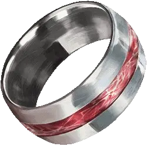

Кольцо красной ярости
Ring of Red Fury
Кольцо, очень редкое (требуется настройка)

Рекомендованная стоимость 5 001-50 000 зм
По всему кольцу проходит полоса руидия. Надев кольцо, вы получаете следующие преимущества:
- Вы можете дышать под водой;
- Вы получаете скорость плавания, равную вашей скорости ходьбы.
Руидиевая ярость. Бонусным действием вы можете использовать кольцо, чтобы получить следующие преимущества, которые длятся в течение 1 минуты или до тех пор, пока вы не станете недееспособны:
- Вы получаете преимущество на проверки и спасброски Силы;
- Когда вы попадаете атакой, вы можете добавить свой бонус мастерства к броску урона;
- Труднопроходимая местность не требует от вас дополнительных перемещения, и вы невосприимчивы к состояниям парализованный и опутанный.
Вы не можете использовать это свойство кольца снова, пока не закончите продолжительный отдых.
Руидиевая порча. Когда вы используете свойство кольца "Руидиевая ярость", вы должны совершить спасбросок Харизмы Сл 20. При провале вы получаете 1 степень истощения. Если вы ещё не страдаете от руидиевой порчи, вы становитесь подвержены ей, после того, как проваливаете этот спасбросок.
Если руидий будет уничтожен. Если Апофеон убит или освобождён, весь руидий в Экзандрии мгновенно уничтожается, а кольцо красной ярости становится кольцом свободных действий [ring of free action].